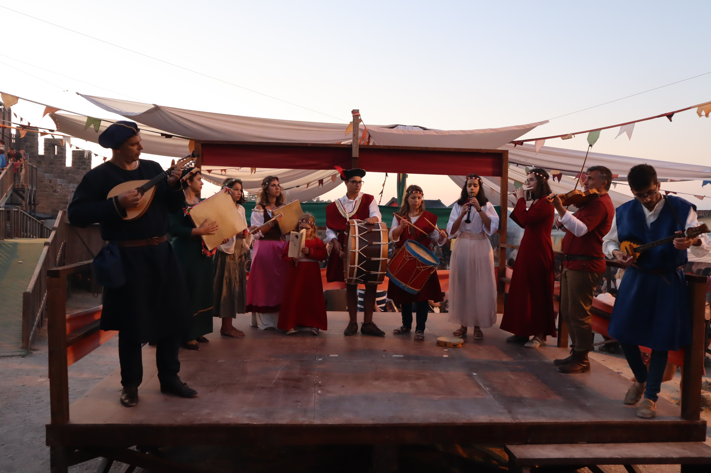
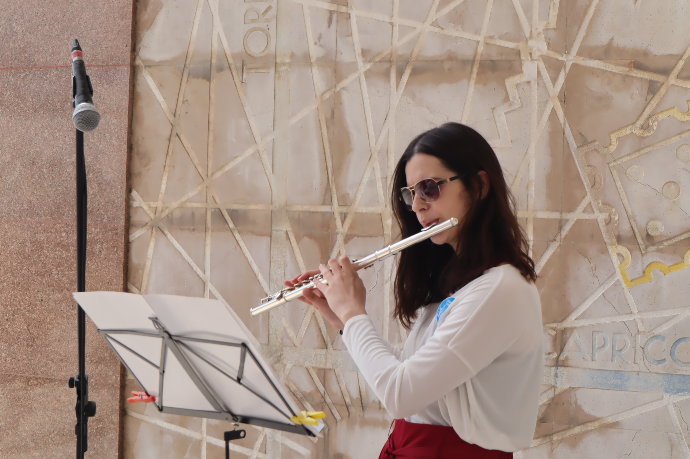

Leadership and Teamwork

Board Secretary
Associação Alegres Olhares
Elected board secretary of the cultural non-profit association Alegres Olhares in the last elections for
the corporation entities. The association organizes and co-organizes projects related to culture using
creativity to take the traditional projects to our present day.

Music Groups
Band of the Philarmonic Society of Olhalvo; Noses com Vozes
Has 10 years of experience in the philarmonic band where she plays transversal flute and piccolo, and is usually a soloist.
Belongs to several music groups such as the group Noses com Vozes, of portuguese traditional music that
lauched its first album in 2019.

Participation in Theater Groups
Beloged to the group of Academic Theater of the Univerisdade de Lisboa (TUT) since September 2019. Participated in the group of theater of Faculdade de Ciências da Universidade de Lisboa in 2017.

Participation and Organization of Events
Coordination and participation in several local events, as volunteer, in associations of cultural development such as Sociedade Filarmónica Olhalvense and Associação Alegres Olhares.